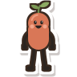

Noodle
Stretching while
Claude is noodling.
Quick desk stretches that slide in while Claude Code works. Free for Mac.
tonitherigatoni.com
Stretching while
Claude is noodling.
Quick desk stretches that slide in while Claude Code works. Free for Mac.
